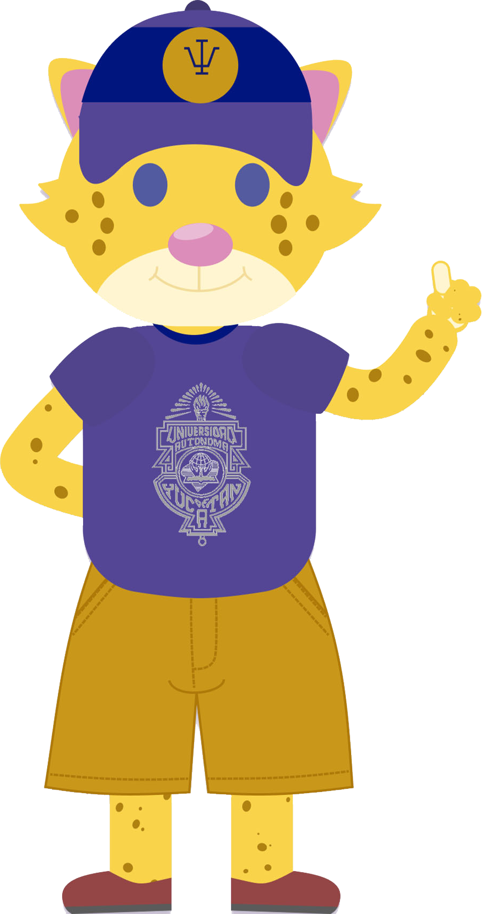
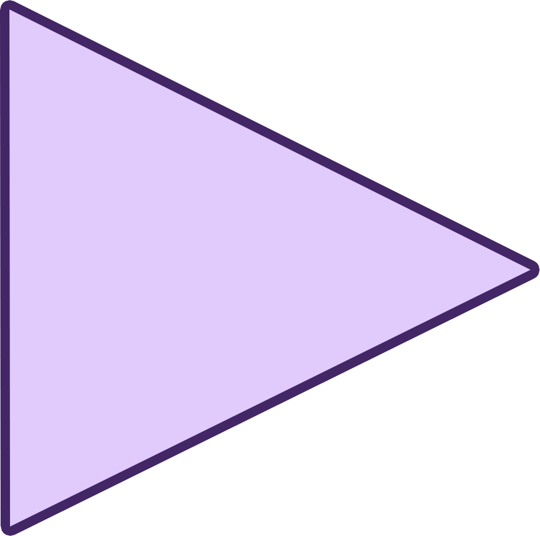
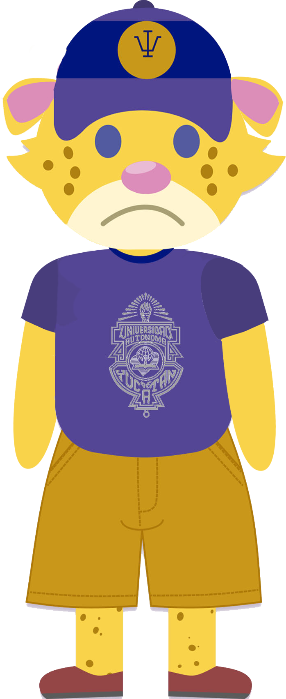
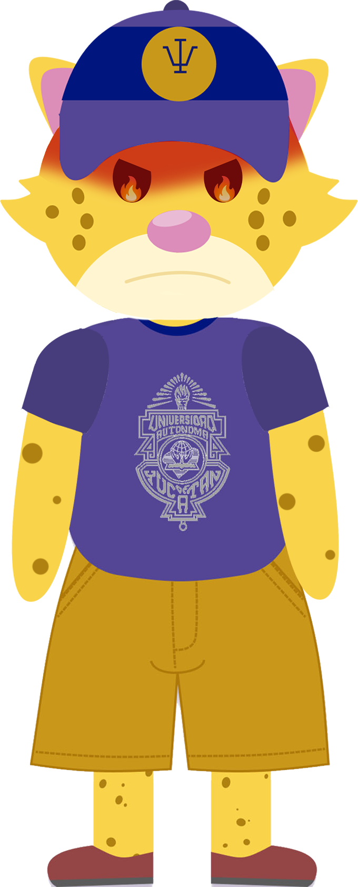
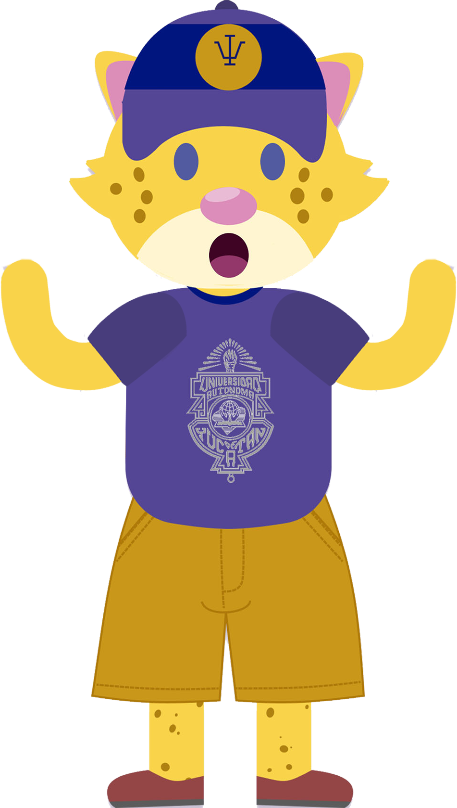
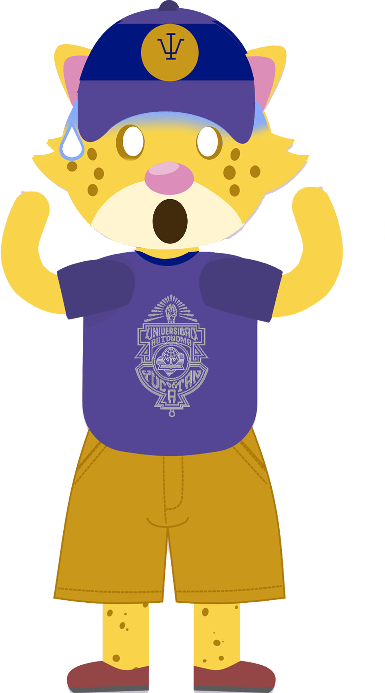
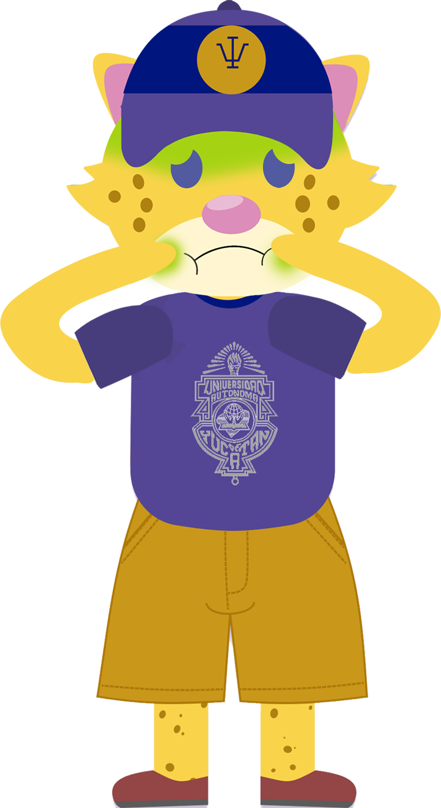

Ruleta
Haz girar la ruleta dando clic en la palabra “girar” Ayuda a Tito a saber qué emoción está sintiendo, leyendo en voz alta la emoción que salga y de qué trata. ¡Juega cuantas veces quieras y descubre más sobre lo que sientes!


Tristeza
Es cuando sentimos pena o cuando algo nos duele o lastima. Por ejemplo cuando extrañamos a alguien o perdemos algo que es valioso para nosotros.

Felicidad
Esta emoción se presenta cuando nos sentimos bien, animados y felices. Nos ayuda a estar con energía y creatividad.
Enojo
Aparece cuando algo nos parece injusto, nos disgusta y nos crea malestar. Cuando estamos enojados, nuestros músculos pueden estar tensos, sobretodo en los hombros y el cuello. También podemos notar que apretamos las manos con fuerza y que el corazón late más rápido.

Sorpresa
Se presenta cuando algo inesperado sucede, y puede generarte emociones como alegría y asombro. A veces puede ser algo muy bueno, como recibir un regalo que no esperabas, o puede ser un poco inquietante como escuchar un ruido de noche.

Miedo
Es cuando te sientes asustado o te sientes en peligro. Esta emoción es la que nos permite reconocer cuando estamos en una situación de riesgo.

Asco
Es una emoción que sentimos cuando algo nos parece muy desagradable, como un olor feo, una comida que sabe mal o algo sucio. Nos ayuda a alejarnos de cosas que podrían hacernos daño o de las que rechazamos.
